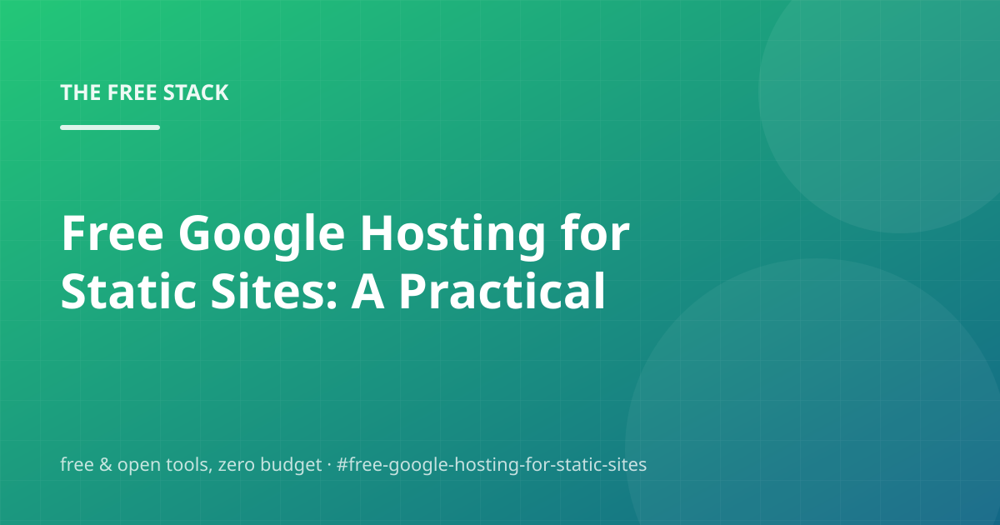

Free Google Hosting for Static Sites: A Practical Field Guide

Most 'complete guides' to free google hosting for static sites pad the word count with ads. This one is different: every recommendation below runs on a free tier, an open-source project, or both. If a recommendation ever costs money, we say so in plain words.
We'll walk through Github Pages, Cloudflare Pages, Netlify Free Tier, and Why Static Hosting Is Free — and finish with the questions people actually ask, so you can check before you buy anything. You shouldn't have to buy anything.
Github Pages
First, the thing that actually matters: GitHub Pages is a free static-hosting service built directly into the repo that already hosts your code.
Concretely: Point Pages at any subdirectory of a repository and GitHub serves it over HTTPS with a built-in URL, custom domain support, and automatic deploys on every push. For a static blog the entire hosting bill is zero, with no server, no DNS glue, and no renewal dates.
For a personal project or side business, this covers you without breaking a sweat.
- Pick a directory (e.g. autopilot-blog/site/) as the site source in repo Settings → Pages
- Push (or let the engine push) the built HTML and the site deploys in under a minute
- Optionally map a custom domain in the same settings page
Cloudflare Pages
Here's the part most people get wrong. Cloudflare Pages is a free static hosting platform with a global CDN and preview deploys for every pull request.
The upshot: Connect a Git repo and every branch or PR gets its own preview URL, while the main branch gets a production URL on Cloudflare's network. The free tier covers static sites comfortably and custom domains are supported without a separate CDN bill.
Keep it this simple and you'll be ahead of most tutorials out there.
- Create a Pages project in the Cloudflare dashboard and link the repo
- Point the build output at the static folder
- Add a custom domain in the project's domains tab
Netlify Free Tier
The foundation looks like this: Netlify's free tier hosts a static site with SSL, CI/CD from Git, forms and generous bandwidth — no card required.
Concretely: Netlify is the classic pick for static sites: drag a folder in or connect a repo, and it handles builds, redirects, and TLS certificates automatically. The free plan's limits are far beyond what a personal blog ever needs.
No signup wall, no credit card — just a README and some patience.
Why Static Hosting Is Free
Worth spending ten minutes on: Static sites are cheap to host because there is no server to keep awake — which is why so many hosts give the tier away.
Concretely: Files are cached at edge nodes and served from memory; there is no database, no runtime, no scaling. When the marginal cost of serving a page approaches zero, hosting becomes a feature to win signups — and that is the deal a personal blog gets to keep.
Write down what you change and why — your future self will thank you.
Frequently asked questions
What would you do first if you only had one free afternoon?
Less than you'd think. Cloudflare Pages is a free static hosting platform with a global CDN and preview deploys for every pull request. Start there and only add pieces when you feel actual pain.
Is free google hosting for static sites actually free?
Mostly, yes. Netlify's free tier hosts a static site with SSL, CI/CD from Git, forms and generous bandwidth — no card required. Free tiers are generous for personal projects, but a growing business should read the pricing page before scaling into it.
What are the real limitations of free google hosting for static sites?
Less than you'd think. GitHub Pages is a free static-hosting service built directly into the repo that already hosts your code. Start there and only add pieces when you feel actual pain.